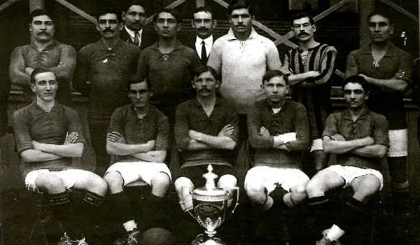
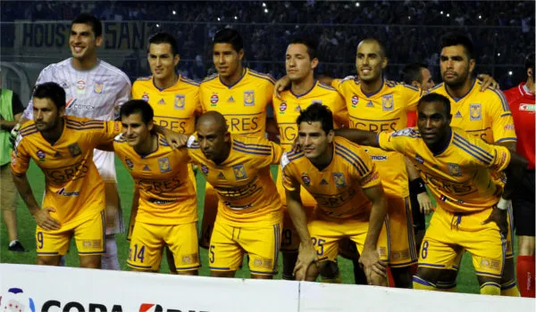

A Copa Libertadores da América é a mais importante competição de clubes de futebol da América do Sul e uma das mais prestigiadas do mundo. O torneio é almejado por todos os times sul-americanos, pois garante uma vaga no Mundial de Clubes da Fifa. O campeão da Copa Libertadores também disputa a Recopa Sul-Americana.
A Libertadores, como é popularmente conhecida, é organizada anualmente pela Confederação Sul-Americana de Futebol (Conmebol ou CSF) e conta com a participação de equipes da Argentina, Bolívia, Brasil, Chile, Colômbia, Equador, Paraguai, Peru, Uruguai e Venezuela. Times do México também já participaram em edições passadas.
História da Libertadores
Com base no desejo de criar um torneio para reunir os clubes campeões de cada país da América do Sul, a tradicional competição teve sua origem no Congresso da CSF, realizado no Rio de Janeiro, em 1958. Mas, antes de ser oficializada, houve muito planejamento e projetos até que se chegasse à decisão final."
As partidas entre times de países diferentes começaram a ser realizadas, na América do Sul, no ano de 1900, por meio da Copa Competência, que reunia clubes de Buenos Aires e Rosário, na Argentina; e Montevidéu, no Uruguai.
Alguns anos depois, durante os meses de fevereiro e março de 1948, foi disputada a Copa dos Campeões da América, composta pelos clubes campeões de seus países no ano anterior. A ideia veio do chileno Luis Valenzuela, que foi presidente da Federação do Chile e da CSF, e do presidente do Colo Colo/CHI, Robinson Álvarez, que manifestou sua decisão de organizar o evento em Santiago.
Em 1958, o brasileiro José Ramos de Freitas, novo presidente da CSF, entrou em contato com as Associações do Paraguai, Uruguai, Argentina e Chile, anunciando sua visita aos países para, com outros dirigentes, tratar de atividades futuras.
Então, em 1959, um novo congresso foi realizado, em Caracas, para fortalecer a ideia chilena e tratar da criação da Copa dos Campeões, que, no momento, já contava com o apoio da Argentina e do Brasil. Dias depois, a decisão foi tomada. Com oito votos a favor e um contra (Uruguai), e abstenção da Venezuela, a CSF decidiu-se pela criação da Copa dos Campeões, nome inicial recebido pelo torneio.
Primeira Libertadores
Na primeira edição, participaram os campeões de sete países. O primeiro jogo foi realizado entre Peñarol, do Uruguai, e Jorge Wilstermann, da Bolívia. Os uruguaios venceram pelo placar de 7 a 1. A partida aconteceu no dia 19 de abril de 1960. O campeão da primeira edição foi o Peñarol, que garantiu o título após vencer, na final, o Olímpia, do Paraguai.
Veja alguns detalhes da primeira partida do torneio que foram relembrados pela Conmebol, ao completar 58 anos de história:
Nomes da Libertadores
Inicialmente, a competição foi tratada como Copa dos Campeões da América, mas, nos anos seguintes, foi decidido que a competição seria batizada de Libertadores da América. O nome foi escolhido em homenagem aos líderes dos movimentos de libertação da América hispânica e do Brasil, atuantes nos séculos XVIII e XIX. De lá para cá, a competição foi recebendo o acréscimo de outros nomes em consequência da inserção de patrocinadores no torneio. Confira os nomes recebidos pela Libertadores:
- 1960 a 1964: Copa Campeões da América
- 1965 a 1997: Copa Libertadores da América
- 1998 a 2007: Copa Toyota Libertadores
- 2008 a 2012: Copa Santander Libertadores
- 2013 a 2016: Copa Bridgestone Libertadores
- 2017: Conmebol Libertadores Bridgestone
- A partir de 2018: Conmebol Libertadores
Participação do México
Mesmo sendo uma competição sul-americana, com a Toyota, patrocinador máster do torneio em 1998, aumentou-se significativamente o interesse de clubes pela competição, devido aos valores distribuídos em premiações. Com isso, nesse mesmo ano, houve a entrada do México, como convidado, no quadro de equipes que disputavam a Libertadores.
Os mexicanos permaneceram no torneio até 2016, quando decidiram abrir mão da disputa em consequência das mudanças implementadas pela Conmebol. Eles destacaram problemas para conciliar os calendários e insatisfação com a redistribuição de vagas, na qual o México teria três times, enquanto o Brasil e Argentina teriam cinco. A saída do México deixou mais duas vagas, para o Brasil, e uma, para a Argentina.
Ao longo dos anos, 18 clubes mexicanos participaram da Libertadores. Nenhum deles foi campeão. As equipes também não tinham direito à vaga no Mundial de Clubes, mesmo se houvesse título, pois o país não é filiado à Conmebol e participava da competição como convidado. O México chegou a três finais de Libertadores, com o Cruz Azul (2001), Chivas (2010) e Tigres (2015).
Quem participa da Libertadores?
A quantidade de equipes participantes da Libertadores oscilou muitas vezes. Na primeira edição, participaram os campeões de sete países; no ano seguinte, foram nove; depois, dez, e esses números foram sendo alterados até 1965. Já na segunda metade da década de 1960 e início da década de 1970, a quantidade de equipes alternava-se entre 17 e 20. De 1974 até 1997, a Libertadores contou com 21 equipes, com exceção para 1986 e 1990, que tiveram 19 equipes.
Em 1998, a competição mudou o formato e inseriu a fase conhecida como Pré-Libertadores, com isso, o número de equipes subiu para 23. Na Pré-Libertadores, quatro equipes enfrentavam-se em turno e returno, e os dois melhores classificavam-se para a fase seguinte (de grupos).
A partir dos anos 2000, o número de equipes subiu, mais uma vez, e até 2009 alternou-se entre 32 e 38 participantes. Em 2010, o número subiu para 40, mas, no ano seguinte, voltou para 38.
Com a mudança promovida pela Conmebol em 2016, o formato do torneio mudou novamente. Desde 2017, a Pré-Libertadores passou a contar com três fases eliminatórias e classificatórias para a fase de grupos. Com isso, o número de times que disputam a competição foi para 47.
Atualmente, participam da Libertadores o atual campeão da competição, o campeão da Copa Sul-Americana e o campeão nacional dos países participantes. As outras equipes classificadas são definidas por meio dos critérios determinados pelas confederações de cada país, mas, em geral, são os primeiros colocados dos campeonatos nacionais.
As equipes da Guiana, Guiana Francesa e Suriname, embora estejam localizadas na América do Sul, não participam da Libertadores porque são filiadas à Confederação de Futebol da América do Norte, Central e Caribe (Concacaf).
No Brasil, classificam-se o campeão da Copa do Brasil e os seis primeiros colocados do Campeonato Brasileiro da Série A. Se o campeão da Copa do Brasil estiver entre os seis primeiros da Série A, o sétimo colocado do Brasileirão também entra na Libertadores. Caso o campeão da Libertadores ou da Sul-Americana seja um time brasileiro, a competição não tira uma vaga do país campeão. Sendo assim, o Brasil pode chegar a ter até nove representantes na Libertadores.